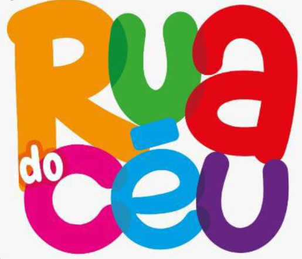

Voluntários ativos
Gestão de acessos
CADASTRO DE EQUIPE
Preencha os dados abaixo para registrar um voluntário ativo.
♥
Dados do voluntário
Todos os campos são obrigatórios.
ÁREA RESTRITA
Entre com seu e-mail e senha.
Primeiro acesso Master Dev?
PRIMEIRO ACESSO
Master Dev: filipegileade@gmail.com
CONVITE DE ACESSO
Defina sua própria senha.
PAINEL
Gestor
Cadastrar manualmente
O voluntário será incluído como ativo.